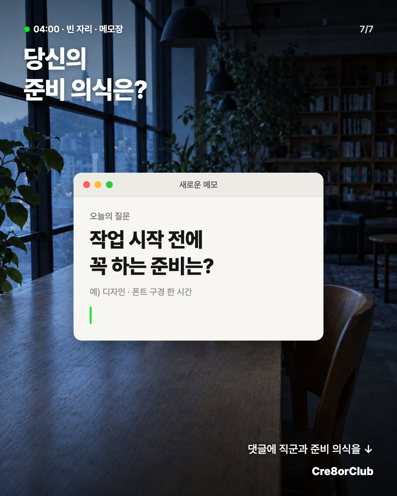

작업은 안 하고 준비만 했는데 하루가 갔다
아침 7시의 라운지 3화예요. 2화(최종 파일명)와 같은 라운지·같은 다섯 사람으로, 이번엔 직군마다 다른 「작업 전 준비」를 모았어요. 장 아래 한 줄은 실제 창작자 글에서 빌렸어요. 아직 시안이고 인스타에는 올리지 않았어요.
9:41●●● ▮
C8
cre8orclub



♡💬↗⌑
cre8orclub작업은 안 하고 준비만 했는데 하루가 갔어요.
디자이너는 폰트를 고르다 결국 쓰던 걸 고르고,
영상은 BGM 후보만 열두 개,
기획은 노션 커버부터 바꾸고,
글은 쓸 앱부터 갈아타고,
작곡은 플러그인이 먼저 깔려요.
여러분은 작업 전에 뭐부터 하세요?
직군이랑 같이 댓글로 남겨 주세요 ↓
오늘의 라운지 기록: 아트보드 1은 아직 비었지만 폰트는 정했어요 👏
#크리에이터클럽 #아침7시의라운지 #CREATORMOMENTS #작업일기 #디자이너 #영상편집 #작곡 #노션
사진을 옆으로 밀거나 ‹ › 를 누르면 7장을 넘겨 볼 수 있어요
이번 회차에 배운 것
- 지난번 담은 월부 콘텐츠팀 회고에서 「이거 누가 누구한테 보낼까」를 먼저 정했어요. 이번 건 창작자가 작업 친구한테 「이거 너」 하고 보내는 그림이에요.
- 받고 싶은 댓글도 먼저 정했어요. 「저는 ○○ 고르다 하루 가요」. 마지막 장 메모가 그 댓글을 부르는 자리예요.
- 창작자 본인이 「준비만 하다 하루 갔다」고 쓴 글은 생각보다 적었어요. 근거를 못 찾은 피그마 장은 빼고, 실제 글이 있는 「글 쓰는 사람」 장으로 바꿨어요.
- 그림은 새로 뽑지 않았어요. 2화 라운지 배경과 인물을 그대로 써서 시리즈처럼 이어 보이게 했어요.
장 아래 한 줄은 어디서 왔나
- 2장 「결국 쓰던 조합을 고른다」 — 디자인 편집샵 BBB 스레드 (2026-05, 좋아요 46)
- 3장 「배경음악 찾느라 이곳저곳 뒤적인다」 — 유튜버 브런치 글 (2022-02)
- 4장 「아이콘 찾다가 시간이 간다」 — 노션 사용 조언 글 (본인 경험담은 아니라 약한 근거)
- 5장 「툴 집착은 글을 얼마나 쓰는가와 상관없다」 — 「내가 글 쓸 때 쓰는 모든 툴」 (2019)
- 6장 「나처럼 돈낭비 시간낭비 하지 말라고」 — 작곡 갤러리 입문 가이드 글 (2022, 추천 65)
- 창 속 파일·탭 이름은 지어낸 장면이에요. 「아트보드 1」「시퀀스 01」「제목 없음」「빈 문서 1」만 프로그램이 실제로 붙이는 이름이에요.
샐리가 봐 줄 것
4장(노션)은 근거가 조언 글이라 가장 약해요. 이대로 둘지, 노션을 빼고 다른 직군으로 바꿀지 봐 주세요.